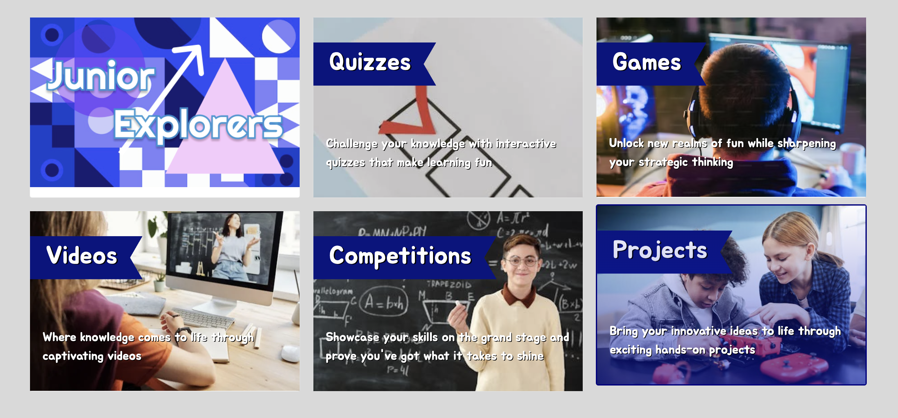
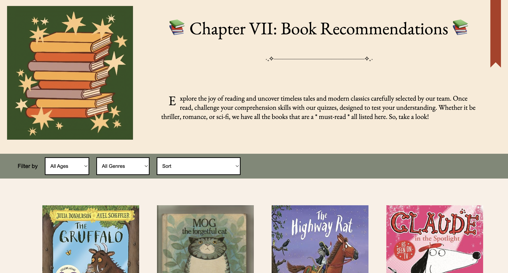
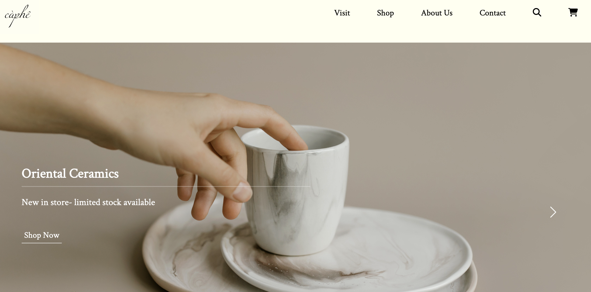

My name is Hai Anh Nguyen, but I go by Anh (pronounced as "Ann").
My coding journey started when I had to develop a Wordpress blog for a university project, taking me right back to the days I messed around with profiles on blog sites such as MySpace and Tumblr. One thing led to another, and soon I was diving into Python and JavaScript on Codecademy and freeCodeCamp. I even got a kick out of tackling challenges on Codewars!
Originally, I was all set for a career in education as I was working as a Learning Support Assistant at a primary school, covering art and creative writing lessons to Year 6 pupils. But, I soon figured out coding excited me more than the prospect of teaching as it presented more academic challenges while tapping into my lifelong love of solving maths problems and puzzles.
In order to transition my passion to a serious job, I took on a coding bootcamp at La Fosse Academy, acing their technical tests and interviews. This bootcamp covered all the bases of full-stack web development (including databases and APIs) and was where I advanced my JavaScript skills. And just recently, I completed a Networking and Cloud Services Technician (IT) course by Netcom Training, where I gained a theoretical understanding of software development (SDLCs & project management) while furthering my knowledge in networking, security, Cloud, hardware and software, data & privacy laws, and IT policies. I also participated in Code First Girls MOOCs and group challenges since last summer (2023).
When I'm not coding, I'm usually hanging out with my cat, cooking up recipes I find on YouTube, cycling around London, or gaming on my PC (mostly Stardew Valley since their big update).

Code First Girls : Introduction to Interactive Websites
Participated in a group project to create an educational site that would encourage young children to explore and specialise in STEM subjects. To ensure children's online safety, we have included safeguarding features- parents are able to log in and supervise their children's activites on the site. I was responsible for designing and coding the Junior Scholars page.
JavaScript HTML CSS Bootstrap

Code First Girls : Introduction to JavaScript Kickstarter
Developed an app that motivates children and teenagers to engage in reading through a series of interactive quizzes and books. Other than coding the site's most complex features, my role also involved building wireframes and creating detailed UI/UX designs in Figma, contributing to the visual appeal and functionality of the app.
JavaScript HTML CSS

Personal Project : E-commerce Site For A 'Cafe'
Designed with the purpose of creating a smooth, easy shopping experience for the user. Customers are able to browse the menu and log in to their account to order their coffee or teaware sets. I used php and mySQL database to store and authenticate users' login information.
JavaScript HTML CSS Bootstrap PHP mySQLRandom Quote Generator
Developed during my time at coding bootcamp. Implemented an API to generate random quotes.
JavaScript HTML CSS API[In Progress] Game
As an avid gamer, this was one of the projects I enjoyed building the most.
HTML CSS PythonTraining
Network Infrastructure and Cloud Services Technician Course | Netcom Training
Sept - Nov 2023
Research-intensive course covering the foundations of IT and the theory behind software development (SDLCs, Agile/Waterfall, etc). Completed Cisco Netacad IT Essentials course which delved in topics such as cybersecurity, Cloud models, IT policies, computer forensics, and data laws.
View Certificate
JavaScript Kickstarter and Interactive Websites Challenge | Code First Girls
Aug - Dec 2023
Attended CFG MOOCs in my free time (Python, Swift, JavaScript, and Interactive Websites) to familiarise myself with different programming languages and joined the Introduction to Interactive Websites challenge and JavaScript Kickstarter to further advance my knowledge in mainly JavaScript and web development skills as I aim to be a web developer/full-stack developer.
View Certificate
Coding Bootcamp | La Fosse Academy
Feb - Apr 2022
Joined a coding bootcamp covering the main areas of web development (JavaScript, HTML, CSS, and Databases). Worked on individual and group projects: using node.js to create a journaling website (using jest to test) and building a random quote generator using an API
View Images
Work Experience
Learning Support Assistant | Edustaff
Sept 2021 - Nov 2021
Supported a Year 6 class at Noel Park Primary School, working with SEN pupils and holding one-to-one reading sessions with students to achieve reading targets. Covered art and creative writing lessons weekly, building up my public speaking, presentation, and classroom management skills.
Team Leader / Manager | Longdan
Sept 2019 - Jun 2021
Promoted to team leader: responsible for cashing up, opening/closing shop, processing refunds/exchanges, revising orders, dealing with customer complaints or enquiries and directing them to senior departments when necessary, and training new staff. Liaised with directors on Teams to provide convenient plans for regular customers and suppliers, ensuring their needs were met with efficiency and a personal touch.
Sales Assistant | Oseyo
Oct 2018 - Jul 2023
Part-time job- during my time at university. Communicated with colleagues to create a easy shopping experience for customers. Entrusted to work at their new branches (e.g., Soho) and supervise new staff, guiding them through operational procedures and customer service standards.
Waitress | SuperStar BBQ
Jun 2018 - Sept 2023
Part-time job- during my time at university. Cultivated a social atmosphere by actively engaging with customers, ensuring their visit is memorable. Paid special attention to customers' dietary requirements and allergies and worked closely with the kitchen to update or customise dishes.